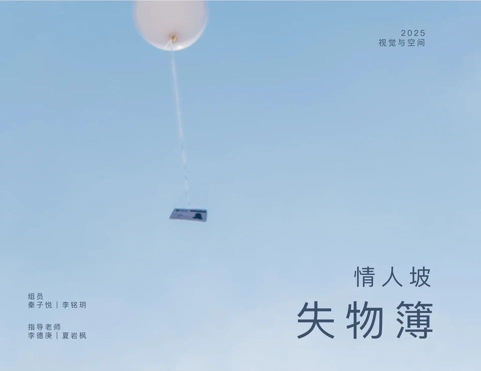
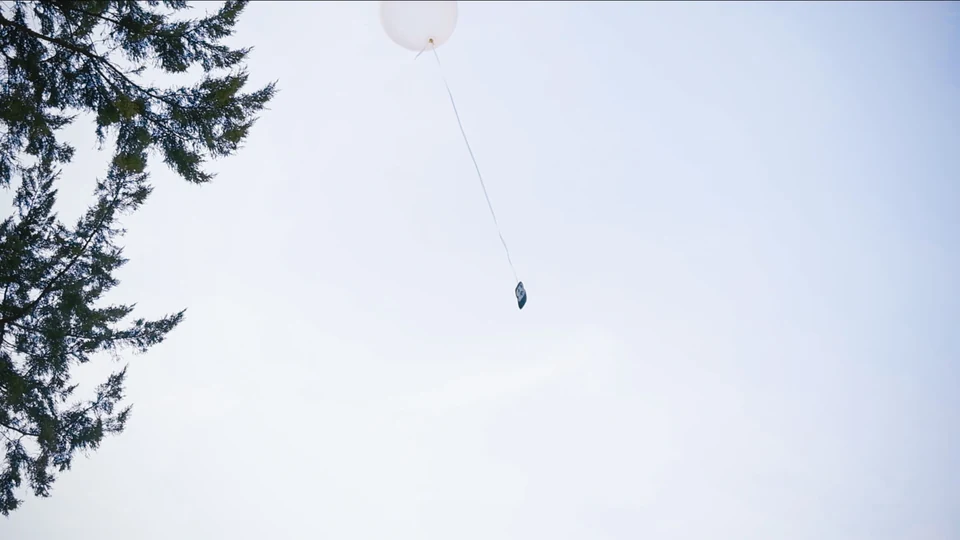

INSTALLATION & SPACE / 2025.03
情人坡失物簿

视觉与空间课程
合作：秦子悦、李铭玥
《情人坡失物簿》关注人与校园空间之间的情感联系。被遗落在情人坡的物品，既是具体的日常用品，也承载着某个人的经历、某段关系或未曾释然的记忆。作品将这些失物转化为图像，悬挂在气球下方，让它们重新出现在曾经被遗落的空间中。
创作最初尝试由人直接放飞气球，随后将方案调整为把气球高低错落地布置在树枝之间，让它们自然随风飘散。气球成为情感的载体，失物图像随之升起、远去，表达对过去的释怀与对未来的开放。现场也有人驻足观看、拍照，使作品与经过这片空间的人产生新的联系。


↔︎ 左右滑动查看现场 · 点击查看大图
